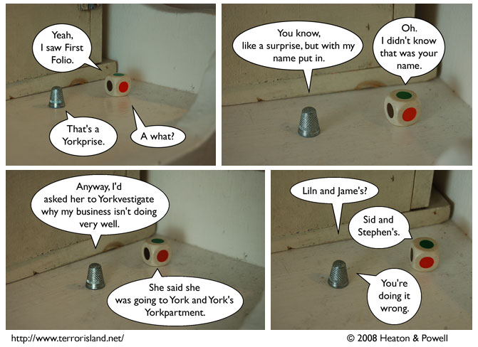

Strip #297
— Monday, May 5, 2008
Why does everyone want to steal that schtick?
Notes, Thoughts, &c.
Ben’s Notes
You may notice that I’ve started putting actual borders on the speech bubbles. This is because I couldn’t remember why I hadn’t been doing it all along.
Lewis’s Notes
Despite a huge outburst of support, or, rather, demand, from our fans that we switch the comic to being exclusively drawn by me in the style of Waiterman’s plans, Ben and I decided to keep the gamepiece photocomic format that has served us well thus far.
Apologies to everyone who was hoping otherwise.